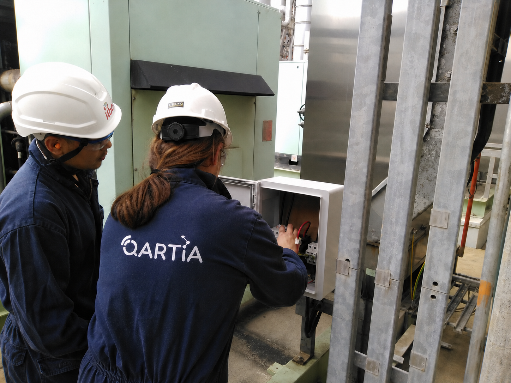
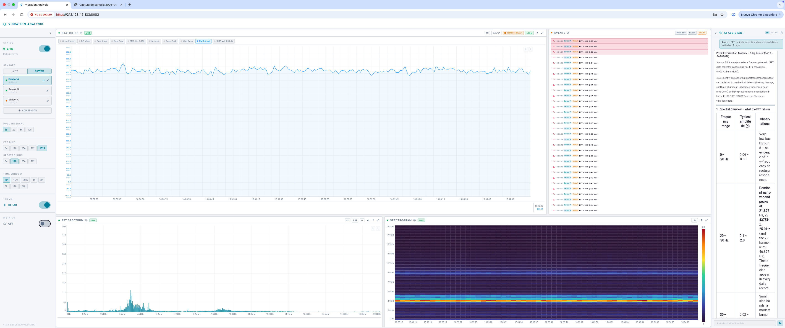
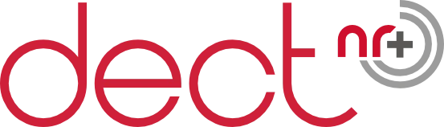
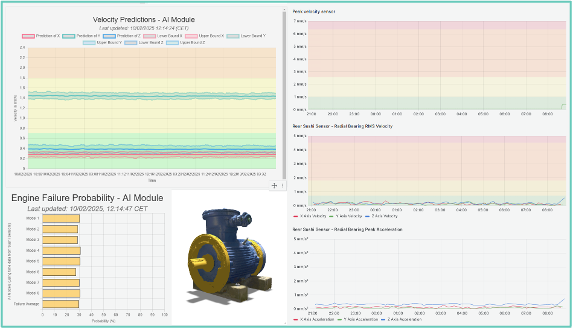

Motors, gearboxes and couplings
Monitoring imbalance, looseness, misalignment and bearing degradation.
Vibration-based predictive maintenance
QARTIA Smart Technologies proposes a solution combining sensing, proprietary electronics, industrial communications and artificial intelligence to anticipate failures in plant rotating machinery.
Industrial vibration
QARTIA develops predictive maintenance solutions based on advanced vibration analysis to anticipate failures in rotating machinery and industrial assets.
The technology captures high-resolution signals directly in the plant, continuously analyses asset condition and turns vibration data into actionable alerts for operations, maintenance and engineering teams.
The system detects misalignment, imbalance, bearing wear, lack of lubrication and other degradation patterns early, before they cause unplanned shutdowns.
QARTIA integrates sensing, proprietary electronics, private DECT NR+ networks and Artificial Intelligence models to deploy an end-to-end solution, even in complex industrial environments or where no previous communications infrastructure exists.

Holcim fit
In building materials plants, anticipating vibration-related failures helps keep production running, reduce risk and extend the useful life of assets with high mechanical load.
Monitoring imbalance, looseness, misalignment and bearing degradation.
Alert prioritisation for equipment that affects production, transport and safety.
Data available to maintenance, operations and engineering without relying on manual rounds.

Operational impact
The value of the system is not only measuring vibration, but turning it into a shared view of severity, trend and intervention priority.

Vibration capture in time and frequency domains to detect real changes in machine condition.

Continuous severity and rotating defect type available to act before failure.

Risk classification under recognised industrial criteria for maintenance, operations and engineering.

Intervention prioritisation based on real asset criticality and avoided downtime cost.
QARTIA proposal
QARTIA's technical architecture is based on proprietary hardware, industrial communications and an expert diagnosis engine with flexible deployment.



Connected AI
AI uses vibration and operating data to estimate asset evolution and anticipate when failure may appear.

Visualisation of AI results in a Digital Twin of the monitored machine.
Vibration, speed, temperature and operating history feed the model.
AI classifies equipment condition and estimates how failure probability evolves.
The system prioritises intervention before an unplanned shutdown.
The team can ask in natural language about the diagnosis, probable cause, asset history and maintenance recommendations.
Rapid activation
A scoped pilot validates data quality, coverage, alert severity and economic value before scaling by area or asset family.
Operational criticality, failure history, downtime cost and maintenance window.
Sensing and network with coverage, mechanical anchoring and signal quality validation.
Impact report, actionable alerts and recommendations prioritised by asset.
Final economic proposal, scale-up plan and service agreement.
Less frequent failures and greater stability in critical rotating machinery.
Higher plant availability and more productive operating time.
Severity and frequency to prioritise where shutdowns cost the most.
Technical reporting for maintenance, operations and management.
Technology integration
QARTIA can integrate with its own hardware or with existing factory sensing, avoiding duplication and leveraging previous investments.
The solution is platform- and vendor-agnostic. It can work with existing equipment and technologies such as LoRa, Ethernet or Modbus, adapting to the specific requirements of each industrial environment.
The goal is to deliver a common layer for visualisation, communications and diagnosis so that maintenance, operations and engineering teams read mechanical risk with the same criteria.
This approach makes it easier to start with critical assets and move towards a more autonomous, traceable maintenance model focused on avoided cost.
Demonstration videos
Video on predictive maintenance based on vibration analysis, focused on deploying the solution on real industrial assets.
Open vibration videoPredictive Maintenance Assistant equivalent to a Category II vibration expert.
Open RAG videoBrochure close
QARTIA's vibration proposal enables a fast start, technical results from the first weeks and economic impact assessment before scaling. The next step would be to define assets, shutdown windows, locations and communications scope.